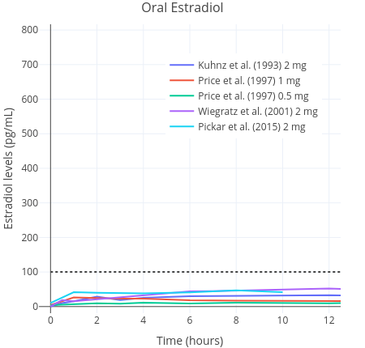
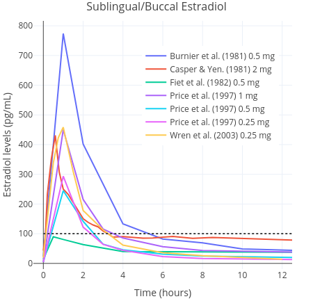

An Exploration of Sublingual Estradiol as an Alternative to Oral Estradiol in Transfeminine People
By Sam | First published June 11, 2021 | Last modified August 14, 2025
Abstract / TL;DR
Sublingually-administered estradiol is an alternative route of administration to oral estradiol that has been used by a limited number of gender-affirming care providers internationally. We do not currently know if sublingual estradiol results in better, worse, or similar feminisation as other routes of administration because there is a paucity of clinical data in this area. There may be practical shortcomings associated with the sublingual route, however clinical experience suggest it to be effective and affordable when dosed correctly. Although much more research is clearly needed to properly characterise this route of administration, sublingual estradiol might have some advantageous properties and may be a useful alternative to oral estradiol for some transfeminine people.
Introduction
Although the most common way to administer medication in the form of pills or tablets is by the oral route, oral estradiol formulations can otherwise be taken sublingually or buccally (Kuhl, 2005). Sublingual administration is the administration of an oral pill or tablet by means of placing under the tongue to dissolve and be absorbed into the bloodstream. Buccal administration is similar and refers to placing the medication between the cheek and gums, where it also quickly dissolves and is absorbed (Gass et al., 2004; Bartlett & Maarschalk, 2012).
Many transfeminine people wonder or ask questions on online forums about the sublingual route of administration for estradiol. Some of the most common queries are “What doses of sublingual estradiol should I take?”, “How often should I take sublingual estradiol?”, “Is sublingual estradiol better than oral estradiol?” and so on.
Until very recently, published data about sublingual estradiol in transfeminine people was scarce, with only a very small number of relevant studies having considered it (eg: Jain, Kwan, & Forcier, 2019, Lim et al., 2019). Accordingly, most information about the sublingual route existed only in older studies of cisgender patient populations (Casper & Yen, 1981; Burnier et al., 1981; Price et al., 1997; Wren et al., 2003). In the last few years, there has been a renewed interest in sublingual estradiol within the literature, specifically with an eye towards gender-affirming hormone therapy. Consequently, many high-level publications including recent clinical guidelines and reviews now make reference to the sublingual route (Coleman et al., 2022; Sudhakar et al., 2023; Grock, Reema, & Ahern, 2024).
It is of note that, although the sublingual and buccal administration are distinct routes of administration, they are very similar to each other in how they are performed and in their pharmacology (Perloff, 1950; Chandrasekhara et al., 2002). As such, although the term “sublingual” has been ostensibly used in this literature review, much of the content here is applicable to buccal administration of estradiol as well.
Pharmacology of Sublingual Estradiol
While sublingual estradiol is not as widely used in clinical practice as oral estradiol and other formulations, a number of studies have examined its pharmacology. These studies include both samples of postmenopausal cisgender women and transfeminine people as well as other patient populations (Casper & Yen, 1981; Serhal & Craft, 1989; Cirrincione et al., 2021; Doll et al., 2022; Kariyawasam et al., 2025). Both oral estradiol and oral estradiol valerate tablets can be taken sublingually (Serhal, 1990).
After the administration of oral estradiol, the medication is heavily metabolised and inactivated into estrogen conjugates by the liver (Kuhl, 2005). In turn, these metabolites are gradually converted back into estradiol, which serves to prolong its half life (to approximately 13–20 hours) (Stanczyk, Archer, & Bhavnani, 2013). In contrast to oral estradiol, sublingual estradiol does not pass as extensively through the liver. Therefore, it does not undergo deactivation into clinically insignificant estrogen metabolites. Sublingually administered estradiol is absorbed rapidly into the bloodstream where it directly enters circulation. Consequently, it has greater bioavailability than oral estradiol, meaning that lower doses are needed to achieve similar area-under-the-curve (AUC) estradiol levels (Kuhl, 2005) (Figures 1 and 2). This is an advantage of sublingual estradiol over oral estradiol, as it allows for the use of lower doses. This in turn might reduce medication costs.
|  |  |
| Figures 1 and 2: Mean average pharmacokinetics in different studies of a single 0.25 to 2 mg dose of micronised estradiol with oral administration (left) and sublingual or buccal administration (right). Sources: Burnier et al. (1981); Casper & Yen (1981); Fiet et al. (1982); Kuhnz, Gansau, & Mahler (1993); Price et al. (1997); Wiegratz et al. (2001); Wren et al. (2003); and Pickar et al. (2015). Dotted black lines represent approximately average integrated estradiol levels in premenopausal women (Verdonk et al., 2019). | |
Because accidental swallowing of some of the estradiol seems probable, the sublingual route is, most likely, actually a combination of sublingual and oral delivery of estradiol (Lobo, 1987; Kuhl, 2005). A small pharamcokinetics study of transfeminine people reported that a single 1 mg dose of sublingual estradiol caused an average rise in the level of estradiol up to an average of 144 pg/mL (529 pmol/L) within one to two hours of administration. In contrast, a peak concentration of just 35 pg/mL (128 pmol/L) was found with the same dose of 1 mg administered orally (Doll et al., 2022). Thereafter, estradiol levels decreased rapidly. In another study, it was found that mean estradiol levels measured at any given point were 613 pmol/L (167 pg/mL) on sublingual estradiol (Kariyawasam et al., 2025). In this study, a wide range of doses were used and hence it is not possible to ascertain much about dose-specific peak concentrations. Similar findings have been reported in other studies of postmenopausal women, although a wide range of peak concentrations have been observed (Burnier et al., 1981; Price et al., 1997; Wren et al., 2003). Estradiol levels are found to rapidly rise on the order of about five to ten times that of the peak of oral estradiol, then rapidly decline, with an elimination half-life of only a few hours (Kuhl, 2005). Sublingual estradiol is somewhat analogous in this respect to intravenously administered estradiol, which also shows a rapid increase in estradiol levels and a very short elimination half-life (Kuhnz, Gansau, & Mahler, 1993). Another route of administration that is similar in this regard is intranasal administration (Devissaguet et al., 1999). Owing to the short half-life elimination of sublingual estradiol, it does not achieve as stable concentrations as other formulations do. This is a marked difference to other routes, such as oral estradiol, that produce much more stable hormone levels and that do not fluctuate as much over the course of the day. All these differences by themselves do not necessarily mean that sublingual estradiol is superior or inferior to oral estradiol (Safer, 2022; Sarvaideo, Doll, & Tangpricha, 2022). Nevertheless, they should be kept in mind when considering findings from relevant studies.
A range of estimates have been reported for the relative bioavailability of sublingual estradiol. One small randomised study of postmenopausal women found approximately 2.5-fold higher AUC levels of estradiol with sublingual estradiol than with the same doses of oral estradiol (Price et al., 1997). Other studies have reported relative bioavailability estimates for sublingual estradiol of up to five times that of oral estradiol (Pines et al., 1999). A study in marmoset monkeys found that the absolute bioavailability of sublingual estradiol was 10%; approximately twice that of conventional absolute bioavailability estimates of oral estradiol (5%, though with a wide range of 0.1 to 12%) (Kuhnz, Blode, & Zimmermann, 1993). Therefore, with respect to AUC levels of estradiol, the sublingual route appears to have between approximately two and five times higher estradiol levels compared to oral estradiol when given at the same doses. Based on these findings, approximately equivalent doses of sublingual estradiol can be derived (Table 1). It is notable that due to substantial interindividual variation in the metabolism of different forms of estradiol, these relative doses are unlikely to correspond to one another on a person-by-person basis. Measurement of circulating estradiol concentrations should always be used to guide dose titration.
Table 1: Approximately comparable doses of estradiol (E2) and estradiol valerate (EV) administered by the oral and sublingual routes in terms of total estradiol exposure (Price et al., 1997; Pines et al., 1999):
| Low Dose | Moderate Dose | High Dose | Very-High Dose | |
|---|---|---|---|---|
| Oral E2 | 2 mg/day | 4 mg/day | 8 mg/day | 10 mg/day |
| Sublingual E2a | 0.5–1 mg/day | 1–2 mg/day | 2–4 mg/day | 2.5–5 mg/day |
| Oral EV | 3 mg/day | 6 mg/day | 10 mg/day | 12 mg/day |
| Sublingual EVa | 0.75–1.5 mg/day | 1.5–3 mg/day | 2.5–5 mg/day | 3–6 mg/day |
a Range calculated by dividing oral doses by two and four to reflect differences in absolute bioavailability and rounding to the nearest 0.25 mg. * Bioidentical estradiol has wide interindividual variation in its pharmacology and the effects of doses are likely to vary significantly between individuals. EV has greater molecular weight and therefore contains less medication for the same amount/dose by weight. It should be noted that estimates for the relative bioavailability of EV are extrapolated from formulations with no valeric ester attached (i.e., E2).
Administration of Multiple Sublingual Doses Per Day
In order to compensate for the short half-life of sublingually administered estradiol, multiple doses of estrogens can be administered in smaller quantities per day to maintain hormone levels that are somewhat more consistent (Ahokas, Kaukoranta, & Aito, 1999; Yaish et al., 2023a; Cortez et al., 2024).
In one study of premenopausal women with high-dose estrogen therapy, 2 mg of sublingual estradiol was administered three or four times per day (a total of 6–8 mg/day), resulting in significantly more stable hormone levels than would be expected with a single dose per day (Serhal & Craft, 1989). This was replicated in another study where estradiol was administered three to eight times per day (Ahokas et al., 2001). Conversely, a third study investigating low-dose buccal estradiol found little difference between the “steady-state” estradiol concentrations with a once-daily and twice-daily 0.25 mg dose of buccal estradiol over a 12 hour observation period (Wren et al., 2003). These findings may indicate that sublingual and buccal estradiol needs to be taken at least thrice per day in order to achieve concentrations of estradiol that are more stable.
It would seem advantageous for transfeminine people using sublingual estradiol that sublingual estradiol is taken in divided doses throughout the day; perhaps ideally at least three or four times per day. For instance, instead of taking a 2 mg dose every 24 hours, it would be better to take four 0.5 mg doses in the space of 24 hours (as evenly spaced as practical). Administering sublingual estradiol multiple times throughout the day might be less convenient, but is likely to provide at least somewhat more balanced estradiol levels. The administration of multiple doses every day could be regarded as optimal for the use of sublingually administered estradiol.
Sublingually Administered Estradiol and Feminisation
The very short half-life of sublingually and buccally administered estradiol relative to other forms raises a few questions relating to its use in feminising hormone therapy. One of the most commonly asked questions on online forums is regarding which gender-affirming hormone therapy regimens might be most “effective” with respect to the feminising effects of estrogens. These include, but are not limited to, outcomes such as breast development and fat distribution.
In contrast to oral and trandermal estradiol, limited data exist describing the extent of feminisation with the sublingual route (Safer, 2022). A non-randomised study found that self-assessed Tanner stage after 6 months of treatment did not appear to be different in users of sublingual estradiol monotherapy as compared to users of oral estradiol plus 10 mg/day cyproterone acetate (Yaish et al., 2023a; Yaish et al., 2023b). However, since breast development itself was not measured objectively, these particular data are low-quality and prevent definitive conclusions either way about the superiority or inferiority of sublingual estradiol. The same study group reported that although there were similar increases in gynoid fat in the two arms, the oral estradiol group did show an increased amount of android fat as compared to the sublingual group (Yaish et al., 2025). On the other hand, a further complication of this study is the possible confounding by lack of concomitant antiandrogen therapy in the sublingual arm (Ruggles & Cheung, 2024; Yaish et al., 2024). Notably, progestogens like cyproterone acetate have been shown to be associated with weight gain (Lopez et al., 2016). This could explain the difference in android fat accumulation.
Oral estradiol and other non-oral forms of estradiol (such as transdermal administration) have not been found to differ in their effects on breast development or other feminising outcomes in transfeminine people or cisgender hypogonadal girls (Rosenfield et al., 2005; Shah et al., 2014; Klaver et al., 2018; de Blok et al., 2021, Tebbens et al., 2022). In consideration of this, differences in efficacy might not be expected for sublingual estradiol either. However, the use of supraphysiological doses of estrogens from the onset of therapy may stunt breast development and reduce final breast size in transfeminine people (Boogers et al., 2025). Because the use of sublingual estradiol results in estradiol concentrations that routinely achieve the supratherapeutic range, it is possible that this could have deleterious effects on breast development.
The fact that several gender clinics have employed sublingual estradiol for some time is encouraging (Deutsch, Bhakri, & Kubicek, 2015; Lim et al., 2019; Cirrincione et al., 2021). Nevertheless, as there is very limited data comparing the feminising efficacy of sublingual estradiol with objective measures, no firm conclusions about any differences in feminisation outcomes between sublingual estradiol and other routes of administration can currently be drawn. Hopefully, studies in the future will shed more light on this.
Testosterone Suppressing Efficacy of Sublingually Administered Estradiol
Another question that might be raised by the short half-life of sublingual estradiol is how it might compare to more conventional routes of administration in terms of its ability to suppress testosterone and other androgens.
Estrogens were first characterised for their use as antigonadotrophic antiandrogens in the 1940s in the form of oral synthetic estrogens, namely diethylstilbestrol (DES), to treat men with prostate cancer (Huggins & Hodges, 1941). Estrogens given in the form of oral ethinylestradiol (EE), long-acting estradiol esters, such as polyestradiol phosphate, and transdermal estradiol patches have been studied. Their efficacy for this indication is well established (Stege et al., 1996; Kohli, 2006; Sciarra et al., 2015). As data are more limited for testosterone suppression with estrogens in transfeminine people, these data are valuable for informing transfeminine hormone therapy. Since sublingual estradiol has never been used to treat prostatic cancer, no such data exist to show the ability of sublingual estradiol in this capacity.
Some studies have found that physiologic levels of estradiol (i.e., 100–200 pg/mL [367–734 pmol/L]) or slightly higher from non-sublingual estradiol alone result in rapid and near complete, if not complete, suppression of testosterone levels to the female range in many transfeminine people (Leinung, Feustel, & Joseph, 2018; Pappas et al., 2020; Misakian et al., 2025). Additionally, the Prostate Adenocarcinoma TransCutaneous Hormones (PATCH) study, a multicentre randomised controlled trial in the United Kingdom, showed that sustained median estradiol levels of between 215 to 250 pg/mL (789–918 pmol/L) from transdermal patches were similarly effective (~95%) to GnRH analogues in reducing testosterone levels to the castrate range (<50 ng/dL [<1.7 nmol/L]) (Langley et al., 2021). However, because sublingual estradiol differs in its pharmacokinetics to other forms of estradiol, it is plausible that this route of administration might result in sub-par suppression at doses with similar concentrations of estradiol.
A few studies have reported the extent of testosterone suppression under sublingual estradiol in transfeminine people. In a randomised controlled trial (RCT) comparing once-daily and twice-daily administration of 2 mg sublingual estradiol to 0.1 mcg/day transdermal estradiol with and without spironolactone, both of the sublingual arms were found to result in inferior testosterone suppression at 1-month and 6-month follow-up (Cortez et al., 2023; Cortez et al., 2024). The authors hypothesised that this could be due to the ability of high concentrations of estrone, which were seen with sublingual estradiol, to inhibit cooperative binding of the estrogen receptor. However, this notion is contradicted by studies comparing oral and transdermal administration of estradiol which have reported no difference in the ability of these formulations to suppress testosterone at equivalent doses (SoRelle et al., 2019; Salakphet et al., 2022; Slack et al., 2025). This is in spite of the large amount of estrone also known to be generated from oral estradiol. Another study of transfeminine people found that sublingual estradiol at a dose of 0.5 mg administered four times daily was able to suppress testosterone as well as oral estradiol in combination with low-dose cypoterone acetate (Yaish et al., 2023a; Yaish et al., 2023b). The use of the four times daily dosing regimen in this study may account for the difference in findings between these two studies in the ability to suppress testosterone. Sublingual estradiol has been studied in transfeminine people in combination with and without the low-dose use of the progestin medroxyprogesterone acetate (MPA) (Jain, Kwan, & Forcier, 2019). In this study, high rates of suppressed testosterone levels (ie: <50 ng/dL [<1.7 nmol/L]) were achieved by the transfeminine people who took sublingual estradiol with medroxyprogesterone acetate, showing that sublingual estradiol taken together with progestogens such as cyproterone acetate is viable for achieving effective testosterone suppression.
A possibility supported by some evidence from pharmacological studies of estradiol is that sustained estradiol levels may be more efficacious with respect to testosterone suppression than the frequent and short-lived peaks in estradiol concentrations that occur with the sublingual route. In some studies of both sublingual and intravenous administration, limited suppression of the gonadotropins (follicle-stimulating hormone and luteinising hormone) have been reported in women despite sufficiently elevated estradiol levels for several hours (Tsai & Yen, 1971; Burnier et al., 1981; Casper & Yen, 1981; Hoon et al., 1993). These studies are low quality and indirect since testosterone suppression itself was not measured and they were performed in cisgender women. Another problem is that all were single dose studies and their findings may not translate to multiple dosing. Nevertheless, these studies might suggest a mechanism by which sublingual estradiol is unable to fully suppress gonadal function in transfeminine people without the use of excessive doses that would lead to greater health risks or the additional use of other antiandrogens.
For the reasons above, transdermal patches, gels and parenteral estradiol esters, such as estradiol valerate, injected intramuscularly or subcutaneously are probably more reliable choices for estradiol monotherapy regimens. If sublingual estradiol is used as a single agent therapy, it would seem reasonable to suggest the use of many divided doses taken throughout the day, as this is probably more likely to be efficacious. Nevertheless, sublingual estradiol appears to be more effective in terms of testosterone suppression when used with concomitant antiandrogens.
Monitoring of Estradiol Levels with Sublingual Administration
A further consideration regarding the rapid changes in estradiol levels that occur with the use of sublingual estradiol is the relevance of monitoring of estradiol levels through bloodwork. Currently, consensus guidelines do not recommend a specific time for monitoring of the blood relative to the time of a last dose (Cheung et al., 2019; T’Sjoen et al., 2020; Coleman et al., 2022). This may be in part due to practical reasons, or because until very recently there were currently no robust data from randomised controlled trials to guide the specifics of dosing in transgender hormone therapy (Haupt et al., 2020). Nevertheless, because estradiol levels vary so significantly with sublingual estradiol, knowledge of how long after the last dose blood was drawn is important to ensure proper interpretation of laboratory results.
For instance, measuring hormone levels just after a dose of sublingual estradiol has been taken might lead to the misinterpretation that levels of estradiol are excessively high and that one’s dosage should be reduced to achieve a more sensible concentration of estradiol in the blood. In reality, this would be a misunderstanding caused by the pharmacology of sublingual estradiol as the point of measurement would be right around the time when estradiol levels are most likely to be at their highest. These estradiol levels would not be indicative of the average amount of exposure, which is the more accurate measure of overall estrogenicity. Similarly, on the opposite end of the scale, drawing blood just before the administration of a new dose might lead to the belief that estrogen levels are too low and, consequently, lead to the use of excessive doses of estrogens. The latter misinterpretation may be more common among people unfamiliar with the pharmacology of sublingual estradiol as levels of estradiol only remain very high in the first few hours after a dose of sublingual estradiol has been taken before falling rapidly.
A possible solution to the problem of rapidly changing hormone levels associated with the sublingual route might simply be to measure when estradiol levels are most likely to be closest to their average. In the case of sublingual estradiol, studies generally find this to be approximately four hours after the administration of a dose, although there is likely to be considerable variation between individuals (Kuhl, 2005). Nevertheless, this approach may give the most representative “snapshot” of overall estrogenic exposure and might help to avoid misleading laboratory data in users of sublingual estradiol.
Safety and Tolerability
Unfortunately, no long term safety data exist for sublingually administered estradiol in the same way that both oral and transdermal estradiol have been rigorously studied in menopausal women (Rovinski et al., 2018; CGHFBC, 2019). The published medical literature concerning the safety and tolerability of this route of administration leaves many questions unanswered.
Adverse Health Effects of Estrogens
With sufficient exposure, owing to their effects in the liver, estrogens are associated with an increased risk of blood clots (Kuhl, 2005). Additionally, under certain circumstances, estrogens can be associated with other cardiovascular complications (Anderson et al., 2004; Mikkola et al., 2005). Although the absolute risk is low in the short-term, these are the most significant health concerns associated with gender-affirming hormone therapy.
A retrospective cohort study in the United States found that the incidence of thromboembolism in transfeminine people with an average dose of 4 mg/day oral estradiol was approximately twice that of cisgender controls not taking hormone therapy after adjusting for confounders (HR 2.0, 95% CI 1.4–2.8 versus reference women) (Getahun et al., 2018). These increases in risks are much lower compared to regimens in transfeminine people in the past that included high doses of synthetic estrogens, however even such increases can significantly increase morbidity and mortality (Morimont, Dogné, & Douxfils, 2020). A 2021 meta-analysis reported an absolute incidence of VTE of 2% in transfeminine people receiving gender-affirming hormone therapy, although with significant between-study heterogeneity (Totaro et al., 2021).
Some studies have assessed the effects of sublingually administered estradiol on the liver (Pines et al., 1999; Lim et al., 2019). These data found similar effects on lipids and cholesterol to other estrogens. One line of evidence that indicates sublingual estradiol has greater hepatic impact than other non-oral forms such as trandermal estradiol is the significantly greater quantities of estrone and estrone sulphate that are generated by this route; a marker of estrogenic exposure in the liver (Burnier et al., 1981; Cirrincione et al., 2021). Intense estrogenic activation in the liver is the mechanism by which non-oral estradiol induces a hypercoagulable state at high doses (Kuhl, 2005). While a large body of research does exist concerning the short and long term health effects of estrogens, none of these studies have investigated sublingual or buccal estradiol (Oliver-Williams et al., 2019; Mishra et al., 2021). Given that oral estradiol has greater risks than non-oral estradiol, and that sublingual administration partially but not fully avoids first-pass metabolism, it may be the case that its own risk would be somewhere between the risk observed with oral estradiol and the risk observed with other conventional non-oral routes (such as transdermal estradiol). However, an ongoing prospective study reported that use of sublingual estradiol alone resulted in less favourable outcomes on some markers of coagulation in the liver as compared to oral estradiol and cyproterone acetate (Bar et al., 2024). These data are indirect, however could suggest that contrary to theoretical expectations, sublingual estradiol might be closer or even less favourable than the risk profile of oral estradiol.
Other adverse effects of estradiol include breast cancer and gallbladder disease. These risks are believed to be dose-dependent (Cummings et al., 1999; Liu et al., 2008). However, as with cardiovascular and thromboembolic complications, no data exist to describe the long-term risk in these other areas with sublingual formulations. In the interest of harm reduction and the balancing of the risks and benefits of gender-affirming hormone therapy, it would be advisable to limit doses of sublingual and buccal estradiol so that they are not excessive (i.e., <6 mg/day) (Jalal & Baldwin, 2023).
Non-compliance
A practical obstacle to the use of sublingual estradiol in transfeminine people is that it may be highly inconvenient to have to administer doses thrice, four times or perhaps even more often throughout the duration of a single day. It has been found in observational studies that, in general, the number of prescribed medications and doses per day are positively associated with patient non-compliance and the number of missed doses (Jin et al., 2008; Toh et al., 2014). These findings are especially of relevance to transfeminine people as, in most cases, we require decades of hormone therapy. While missing one dose from time to time may be of little consequence, missing doses repeatedly could be more problematic. Despite this, sublingual estradiol has been used in studies of transfeminine people where it has been administered up to four times daily (Yaish et al., 2023a).
In contrast to sublingual estradiol, the half-life of oral estradiol and transdermal gel is long enough to enable once-daily administration (Wiegratz et al., 2001; Potts & Lobo, 2005). In the case of transdermal patches and parenteral estradiol, these forms only have to be replenished every few days or after even longer intervals of time (Thurman et al., 2013; Wisner et al., 2015). Therefore, when considering the use of sublingual estradiol versus other forms, whether or not it would be practical or convenient to consistently take medication several times a day should probably also be an important consideration for transfeminine people. If not, then another formulation may be preferable for the person in question. This may be especially true for long term use.
Summary and Conclusions
Sublingual estradiol is different in its pharmacology to other routes. The main difference is that it is associated with a rapid rise and fall in estradiol levels. It has between two and four times the bioavailability of oral estradiol and hence provides the same total estradiol exposure at doses that are two to four times lower. This could be a particular advantage because sublingual estradiol, therefore, is cheaper than oral estradiol.
There is much less research investigating sublingual estradiol than other forms of estrogen. These forms, such as oral and transdermal estrogens, are widely used in the alleviation of the menopause and for other indications. Consequently, they have received much more attention and characterisation than sublingual estradiol has for transfeminine hormone therapy. However, studies are beginning to add our knowledge of sublingual estradiol. Clinical practice guidelines for transgender care, which historically did not make reference to the use of sublingual estradiol, have now begun to discuss it.
The evidence is inconclusive regarding whether sublingual estradiol results in better, worse, or the same feminisation when compared with other routes of administration. However, it is plausible that the supra-physiologic levels of estradiol that frequently occur with sublingual estradiol could be detrimental to breast development. It also seems that sublingual estradiol could result in lesser testosterone suppression when used as a single agent therapy as compared to other routes. Sublingual estradiol has, nonetheless, been shown to be effective with respect to testosterone suppression when paired with other antiandrogens. Care should be taken with sublingual estradiol when monitoring estradiol levels to ensure correct interpretation. In order to help minimise these potential problems, sublingual estradiol can be taken in multiple doses divided throughout the day.
The health risks of sublingual estradiol have not been quantified in large observational or randomised studies. Therefore, although the first pass effect in the liver is partially avoided, the cardiovascular risks associated with long-term sublingual estradiol remain unknown. Sublingual estradiol may also be inconvenient and other formulations can be used instead if preferred, particularly for more long-term therapy.
Taken together, although much more research is clearly needed to properly characterise sublingual estradiol in transfeminine hormone therapy, it might have some advantageous properties and may be a useful alternative to oral estradiol.
References
- Ahokas, A., Kaukoranta, J., & Aito, M. (1999). Effect of oestradiol on postpartum depression. Psychopharmacology, 146(1), 108–110. [DOI:10.1007/s002130051095]
- Ahokas, A., Kaukoranta, J., Wahlbeck, K., & Aito, M. (2001). Estrogen deficiency in severe postpartum depression: successful treatment with sublingual physiologic 17β-estradiol: a preliminary study. Journal of Clinical Psychiatry, 62(5), 332–336. [DOI:10.4088/jcp.v62n0504]
- Anderson, G. L., Limacher, M., Assaf, A. R., Bassford, T., Beresford, S. A., Black, H., Bonds, D., Brunner, R., Brzyski, R., Caan, B., Chlebowski, R., Curb, D., Gass, M., Hays, J., Heiss, G., Hendrix, S., Howard, B. V., Hsia, J., Hubbell, A., Jackson, R., … & Women’s Health Initiative Steering Committee. (2004). Effects of Conjugated Equine Estrogen in Postmenopausal Women With Hysterectomy: The Women’s Health Initiative Randomized Controlled Trial. JAMA, 291(14), 1701–1712. [DOI:10.1001/jama.291.14.1701]
- Bar, O. S., Yaish, I., Barzilai, M., Greenman, Y., Gindis, G., Moshe, Y., & Tordjman, K. (2024, May). Low dose sublingual estradiol decreases protein s, generating a potentially pro-thrombotic state: interim results of a controlled prospective pilot study of treatment-naive trans women. In Endocrine Abstracts (Vol. 99). Bioscientifica. [DOI:10.1089/trgh.2024.0105]
- Bartlett, J. A., & van der Voort Maarschalk, K. (2012). Understanding the oral mucosal absorption and resulting clinical pharmacokinetics of asenapine. AAPS Pharmscitech, 13(4), 1110–1115. [DOI:10.1208/s12249-012-9839-7]
- Boogers, L. S., Sardo Infirri, S. A., Bouchareb, A., Dijkman, B. A., Helder, D., de Blok, C. J., … & Hannema, S. E. (2025). Variations in Volume: Breast Size in Trans Women in Relation to Timing of Testosterone Suppression. The Journal of Clinical Endocrinology & Metabolism, 110(5), 1404-1410. [DOI:10.1210/clinem/dgae573]
- Burnier, A. M., Martin, P. L., Yen, S. S., & Brooks, P. (1981). Sublingual absorption of micronized 17β-estradiol. American Journal of Obstetrics and Gynecology, 140(2), 146–150. [DOI:10.1016/0002-9378(81)90101-0]
- Casper, R. F., & Yen, S. S. (1981). Rapid absorption of micronized estradiol-17β following sublingual administration. Obstetrics and Gynecology, 57(1), 62–64. [Google Scholar] [PubMed] [URL] [PDF]
- Chandrasekhara, D. S., Ali, V., Prost, H. M., & Nader-Estekhari, S. (2002). Buccal estrogen in toothpaste study: systemic absorption of estradiol in postmenopausal or surgically menopausal women when administered as a component in toothpaste. Fertility and Sterility, 78(Suppl 1), S98–S98 (O-258). [DOI:10.1016/S0015-0282(02)03639-7]
- Cheung, A. S., Wynne, K., Erasmus, J., Murray, S., & Zajac, J. D. (2019). Position statement on the hormonal management of adult transgender and gender diverse individuals. Medical Journal of Australia, 211(3), 127–133. [DOI:10.5694/mja2.50259]
- Cirrincione, L. R., Winston McPherson, G., Rongitsch, J., Sadilkova, K., Drees, J. C., Krasowski, M. D., Dickerson, J. A., & Greene, D. N. (2021). Sublingual Estradiol Is Associated with Higher Estrone Concentrations than Transdermal or Injectable Preparations in Transgender Women and Gender Nonbinary Adults. LGBT Health, 8(2), 125–132. [DOI:10.1089/lgbt.2020.0249]
- Coleman, E., Radix, A. E., Bouman, W. P., Brown, G. R., De Vries, A. L., Deutsch, M. B., … & Arcelus, J. (2022). Standards of care for the health of transgender and gender diverse people, version 8. International Journal of Transgender Health, 23(sup1), S1-S259. [DOI:10.1080/26895269.2022.2100644]
- Collaborative Group on Hormonal Factors in Breast Cancer. (2019). Type and timing of menopausal hormone therapy and breast cancer risk: individual participant meta-analysis of the worldwide epidemiological evidence. The Lancet, 394(10204), 1159–1168. [DOI:10.1016/S0140-6736(19)31709-X]
- Cortez, S., Moog, D., Lewis, C., Williams, K., Herrick, C., Fields, M., Gray, T., Guo, Z., Nicol, G., & Baranski, T. (2023). Effectiveness and Safety of Different Estradiol Regimens in Transgender Women (TREAT Study): Protocol for a Randomized Controlled Trial. JMIR Research Protocols, 12, e53092. [DOI:10.2196/53092]
- Cortez, S., Moog, D., Lewis, C., Williams, K., Herrick, C. J., Fields, M. E., … & Baranski, T. (2024). Effectiveness and safety of different estradiol regimens in transgender females: a randomized controlled trial. Journal of the Endocrine Society, 8(8), bvae108. [DOI: 10.1210/jendso/bvae108]
- Cummings, S. R., Eckert, S., Krueger, K. A., Grady, D., Powles, T. J., Cauley, J. A., … & Jordan, V. C. (1999). The effect of raloxifene on risk of breast cancer in postmenopausal women: results from the MORE randomized trial. JAMA, 281(23), 2189-2197. [DOI:10.1001/jama.281.23.2189]
- de Blok, C., Dijkman, B., Wiepjes, C. M., Staphorsius, A. S., Timmermans, F. W., Smit, J. M., Dreijerink, K., & den Heijer, M. (2021). Sustained Breast Development and Breast Anthropometric Changes in 3 Years of Gender-Affirming Hormone Treatment. The Journal of Clinical Endocrinology & Metabolism, 106(2), e782–e790. [DOI:10.1210/clinem/dgaa841]
- Deutsch, M. B., Bhakri, V., & Kubicek, K. (2015). Effects of cross-sex hormone treatment on transgender women and men. Obstetrics and Gynecology, 125(3), 605–610. [DOI:10.1097/AOG.0000000000000692]
- Devissaguet, J. P., Brion, N., Lhote, O., & Deloffre, P. (1999). Pulsed estrogen therapy: pharmacokinetics of intranasal 17-beta-estradiol (S21400) in postmenopausal women and comparison with oral and transdermal formulations. European Journal of Drug Metabolism and Pharmacokinetics, 24(3), 265–271. [DOI:10.1007/BF03190030]
- Doll, E. E., Gunsolus, I., Lamberton, N., Tangpricha, V., & Sarvaideo, J. L. (2020). Pharmacokinetics of Sublingual Versus Oral Estradiol in Transgender Women. Journal of the Endocrine Society, 4(Suppl 1), A1128–A1128 (SUN-LB9). [DOI:10.1210/jendso/bvaa046.2237]
- Doll, E., Gunsolus, I., Thorgerson, A., Tangpricha, V., Lamberton, N., & Sarvaideo, J. L. (2022). Pharmacokinetics of Sublingual Versus Oral Estradiol in Transgender Women. Endocrine Practice, 28(3), 237–242. [DOI:10.1016/j.eprac.2021.11.081]
- Fiet, J., Hermano, M., Witte, J., Villette, J. M., Haimart, M., Gourmel, B., Tabuteau, F., Rouffy, J., & Dreux, C. (1982). Post-menopausal concentrations of plasma oestradiol, oestrone, FSH and LH and of total urinary oestradiol and oestrone after a single sublingual dose of oestradiol-17β. Acta Endocrinologica, 101(1), 93–97. [DOI:10.1530/acta.0.1010093]
- Gass, M. S., Rebar, R. W., Cuffie-Jackson, C., Cedars, M. I., Lobo, R. A., Shoupe, D., Judd, H. L., Buyalos, R. P., & Clisham, P. R. (2004). A short study in the treatment of hot flashes with buccal administration of 17-β estradiol. Maturitas, 49(2), 140–147. [DOI:10.1016/j.maturitas.2003.12.004]
- Getahun, D., Nash, R., Flanders, W. D., Baird, T. C., Becerra-Culqui, T. A., Cromwell, L., Hunkeler, E., Lash, T. L., Millman, A., Quinn, V. P., Robinson, B., Roblin, D., Silverberg, M. J., Safer, J., Slovis, J., Tangpricha, V., & Goodman, M. (2018). Cross-sex hormones and acute cardiovascular events in transgender persons: a cohort study. Annals of Internal Medicine, 169(4), 205–213. [DOI:10.7326/M17-2785]
- Gindis, G., Yaish, I., Greenman, Y., Moshe, Y., Arbiv, M., Buch, A., Sofer, Y., Shefer, G., & Tordjman, K. (May 2023). Sublingual estradiol only, offers no apparent advantage over combined oral estradiol and cyproterone acetate, for Gender Affirming Hormone Therapy (GAHT) of treatment-naive transwomen: Results of a prospective pilot study. Endocrine Abstracts, 90 [25th European Congress of Endocrinology 2023, 13–16 May 2023, Istanbul, Turkey], 274–274 (abstract no. P182). [DOI:10.1530/endoabs.90.p182] [PDF]
- Grock, S., Patel, R., & Ahern, S. (2024). Hormone Therapy for Transgender and Gender-Diverse Patients. In Genital Gender Affirming Surgery: An Illustrated Guide and Video Atlas (pp. 33-49). Cham: Springer Nature Switzerland. [DOI:10.1007/978-3-031-69997-9_4]
- Haupt, C., Henke, M., Kutschmar, A., Hauser, B., Baldinger, S., Saenz, S. R., & Schreiber, G. (2020). Antiandrogen or estradiol treatment or both during hormone therapy in transitioning transgender women. Cochrane Database of Systematic Reviews, 11(11), CD013138. [DOI:10.1002/14651858.CD013138.pub2]
- Hoon, T. J., Dawood, M. Y., Khan‐Dawood, F. S., Ramos, J., & Batenhorst, R. L. (1993). Bioequivalence of a 17β‐Estradiol Hydroxypropyl‐β‐Cyclodextrin Complex in Postmenopausal Women. The Journal of Clinical Pharmacology, 33(11), 1116–1121. [DOI:10.1002/j.1552-4604.1993.tb01949.x]
- Huggins, C., & Hodges, C. V. (1941). Studies on prostatic cancer. I. The effect of castration, of estrogen and of androgen injection on serum phosphatases in metastatic carcinoma of the prostate. Cancer Research, 1(4), 293–297. [DOI:10.3322/canjclin.22.4.232]
- Jain, J., Kwan, D., & Forcier, M. (2019). Medroxyprogesterone acetate in Gender-Affirming therapy for Transwomen: results from a retrospective study. The Journal of Clinical Endocrinology & Metabolism, 104(11), 5148–5156. [DOI:10.1210/jc.2018-02253]
- Jalal, E., & Baldwin, C. (2023). Supratherapeutic Estrogen Levels in Transgender Women Likely From Sublingual Estradiol. Journal of the Endocrine Society, 7(Suppl 1) [ENDO 2023 Abstracts Annual Meeting of the Endocrine Society], A1095–A1096 (abstract no. SAT391/bvad114.2062). [DOI:10.1210/jendso/bvad114.2062] [PDF]
- Jin, J., Sklar, G. E., Oh, V. M. S., & Li, S. C. (2008). Factors affecting therapeutic compliance: A review from the patient’s perspective. Therapeutics and Clinical Risk Management, 4(1), 269–286. [DOI:10.2147/TCRM.S1458]
- Kariyawasam, N. M., Ahmad, T., Sarma, S., & Fung, R. (2025). Comparison of estrone/estradiol ratio and levels in transfeminine individuals on different routes of estradiol. Transgender Health, 10(3), 261-268. [DOI:10.1089/trgh.2023.0138]
- Klaver, M., de Blok, C. J. M., Wiepjes, C. M., Nota, N. M., Dekker, M. J., de Mutsert, R., Schreiner, T., Fisher, A. D., T’Sjoen, G., & den Heijer, M. (2018). Changes in regional body fat, lean body mass and body shape in trans persons using cross-sex hormonal therapy: results from a multicenter prospective study. European Journal of Endocrinology, 178(2), 163–171. [DOI:10.1530/EJE-17-0496]
- Kohli, M. (2006). Phase II study of transdermal estradiol in androgen‐independent prostate carcinoma. Cancer, 106(1), 234–235. [DOI:10.1002/cncr.21528]
- Kuhl, H. (2005). Pharmacology of estrogens and progestogens: influence of different routes of administration. Climacteric, 8(Suppl 1), 3–63. [DOI:10.1080/13697130500148875] [PDF]
- Kuhnz, W., Blode, H., & Zimmermann, H. (1993). Pharmacokinetics of exogenous natural and synthetic estrogens and antiestrogens. In Oettel, M., & Schillinger, E. (Eds.). Estrogens and Antiestrogens II: Pharmacology and Clinical Application of Estrogens and Antiestrogen (Handbook of Experimental Pharmacology, Volume 135, Part 2) (pp. 261–322). Berlin/Heidelberg: Springer. [DOI:10.1007/978-3-642-60107-1_15]
- Kuhnz, W., Gansau, C., & Mahler, M. (1993). Pharmacokinetics of estradiol, free and total estrone, in young women following single intravenous and oral administration of 17β-estradiol. Arzneimittelforschung, 43(9), 966–973. [Google Scholar] [PubMed] [PDF]
- Langley, R. E., Gilbert, D. C., Duong, T., Clarke, N. W., Nankivell, M., Rosen, S. D., Mangar, S., Macnair, A., Sundaram, S. K., Laniado, M. E., Dixit, S., Madaan, S., Manetta, C., Pope, A., Scrase, C. D., Mckay, S., Muazzam, I. A., Collins, G. N., Worlding, J., Williams, S. T., … & Parmar, M. (2021). Transdermal oestradiol for androgen suppression in prostate cancer: long-term cardiovascular outcomes from the randomised Prostate Adenocarcinoma Transcutaneous Hormone (PATCH) trial programme. The Lancet, 397(10274), 581–591. [DOI:10.1016/S0140-6736(21)00100-8]
- Leinung, M. C., Feustel, P. J., & Joseph, J. (2018). Hormonal treatment of transgender women with oral estradiol. Transgender Health, 3(1), 74–81. [DOI:10.1089/trgh.2017.0035]
- Lim, H. H., Jang, Y. H., Choi, G. Y., Lee, J. J., & Lee, E. S. (2019). Gender affirmative care of transgender people: a single center’s experience in Korea. Obstetrics & Gynecology Science, 62(1), 46–55. [DOI:10.5468/ogs.2019.62.1.46]
- Liu, B., Beral, V., Balkwill, A., Green, J., Sweetland, S., & Reeves, G. (2008). Gallbladder disease and use of transdermal versus oral hormone replacement therapy in postmenopausal women: prospective cohort study. BMJ, 337. [DOI:10.1136/bmj.a386]
- Lobo, R. A. (1987). Absorption and metabolic effects of different types of estrogens and progestogens. Obstetrics and Gynecology Clinics of North America, 14(1), 143–167. [PubMed] [DOI:10.1016/S0889-8545(21)00577-5] [URL]
- Lopez, L. M., Ramesh, S., Chen, M., Edelman, A., Otterness, C., Trussell, J., & Helmerhorst, F. M. (2016). Progestin‐only contraceptives: effects on weight. Cochrane Database of Systematic Reviews, (8). [DOI:10.1002/14651858.CD008815.pub4]
- Mikkola, A., Aro, J., Rannikko, S., Oksanen, H., Ruutu, M., & Finnprostate Group. (2005). Cardiovascular complications in patients with advanced prostatic cancer treated by means of orchiectomy or polyestradiol phosphate. Scandinavian Journal of Urology and Nephrology, 39(4), 294–300. [DOI:10.1080/00365590510031228]
- Misakian, A. L., Ariel, D., Sullivan, E. A., Singh, G., Loeb, D., Strickland, T., … & Hamnvik, O. P. R. (2025). Injectable estradiol monotherapy effectively suppresses testosterone in gender-affirming hormone therapy. Endocrine Practice. [DOI:10.1016/j.eprac.2025.07.002]
- Mishra, S. R., Chung, H. F., Waller, M., & Mishra, G. D. (2021). Duration of estrogen exposure during reproductive years, age at menarche and age at Menopause, and risk of cardiovascular disease events, all‐cause and cardiovascular mortality: a systematic review and meta‐analysis. BJOG: An International Journal of Obstetrics & Gynaecology, 128(5), 809–821. [DOI:10.1111/1471-0528.16524]
- Morimont, L., Dogné, J. M., & Douxfils, J. (2020). Letter to the Editors-in-Chief in response to the article of Abou-Ismail, et al. entitled “Estrogen and thrombosis: A bench to bedside review” (Thrombosis Research 192 (2020) 40–51). Thrombosis Research, 193, 221–223. [DOI:10.1016/j.thromres.2020.08.006]
- Oliver-Williams, C., Glisic, M., Shahzad, S., Brown, E., Pellegrino Baena, C., Chadni, M., Chowdhury, R., Franco, O. H., & Muka, T. (2019). The route of administration, timing, duration and dose of postmenopausal hormone therapy and cardiovascular outcomes in women: a systematic review. Human Reproduction Update, 25(2), 257–271. [DOI:10.1093/humupd/dmy039]
- Pappas, I. I., Craig, W. Y., Spratt, L. V., & Spratt, D. I. (2021). Efficacy of Sex Steroid Therapy Without Progestin or GnRH Agonist for Gonadal Suppression in Adult Transgender Patients. The Journal of Clinical Endocrinology & Metabolism, 106(3), e1290–e1300. [DOI:10.1210/clinem/dgaa884]
- Perloff, W. H. (1950). Estradiol buccal tablets in the treatment of the menopause. American Journal of Obstetrics and Gynecology, 59(1), 223–225. [DOI:10.1016/0002-9378(50)90390-5]
- Pickar, J. H., Bon, C., Amadio, J. M., Mirkin, S., & Bernick, B. (2015). Pharmacokinetics of the first combination 17β-estradiol/progesterone capsule in clinical development for menopausal hormone therapy. Menopause, 22(12), 1308–1316. [DOI:10.1097/GME.0000000000000467]
- Pines, A., Averbuch, M., Fisman, E. Z., & Rosano, G. M. (1999). The acute effects of sublingual 17β-estradiol on the cardiovascular system. Maturitas, 33(1), 81–85. [DOI:10.1016/S0378-5122(99)00036-5]
- Potts, R. O., & Lobo, R. A. (2005). Transdermal drug delivery: clinical considerations for the obstetrician–gynecologist. Obstetrics & Gynecology, 105(5), 953–961. [DOI:10.1097/01.AOG.0000161958.70059.db]
- Price, T. M., Blauer, K. L., Hansen, M., Stanczyk, F., Lobo, R., & Bates, G. W. (1997). Single-dose pharmacokinetics of sublingual versus oral administration of micronized 17β-estradiol. Obstetrics & Gynecology, 89(3), 340–345. [DOI:10.1016/S0029-7844(96)00513-3]
- Rosenfield, R. L., Devine, N., Hunold, J. J., Mauras, N., Moshang Jr, T., & Root, A. W. (2005). Salutary effects of combining early very low-dose systemic estradiol with growth hormone therapy in girls with Turner syndrome. The Journal of Clinical Endocrinology & Metabolism, 90(12), 6424–6430. [DOI:10.1210/jc.2005-1081]
- Rovinski, D., Ramos, R. B., Fighera, T. M., Casanova, G. K., & Spritzer, P. M. (2018). Risk of venous thromboembolism events in postmenopausal women using oral versus non-oral hormone therapy: a systematic review and meta-analysis. Thrombosis Research, 168, 83–95. [DOI:10.1016/j.thromres.2018.06.014]
- Ruggles, T., & Cheung, A. S. (2024). Re:” Sublingual Estradiol Offers No Apparent Advantage over Combined Oral Estradiol and Cyproterone Acetate for Gender-Affirming Hormone Therapy of Treatment-Naive Trans Women: Results of a Prospective Pilot Study” by Yaish et al. Transgender Health, 9(5), 459. [DOI:10.1089/trgh.2024.0048]
- Salakphet, T., Mattawanon, N., Manojai, N., Muangmool, T., & Tangpricha, V. (2022). Hormone concentrations in transgender women who self-prescribe gender affirming hormone therapy: a retrospective study. The Journal of Sexual Medicine, 19(5), 864-871. [DOI:10.1016/j.jsxm.2022.02.023]
- Safer, J. D. (2022). Are the Pharmacokinetics of Sublingual Estradiol Superior or Inferior to Those of Oral Estradiol? Endocrine Practice, 28(3), 351–352. [DOI:10.1016/j.eprac.2021.12.018]
- Sarvaideo, J., Doll, E., & Tangpricha, V. (2022). More Studies Are Needed to Establish the Safety and Efficacy of Sublingual Estradiol in Transgender Women. Endocrine Practice, 28(3), 353–354. [DOI:10.1016/j.eprac.2022.01.004]
- Sciarra, A., Gentile, V., Cattarino, S., Gentilucci, A., Alfarone, A., D’Eramo, G., & Salciccia, S. (2015). Oral ethinylestradiol in castration‐resistant prostate cancer: a 10‐year experience. International Journal of Urology, 22(1), 98–103. [DOI:10.1111/iju.12613]
- Serhal, P., & Craft, I. (1989). Oocyte donation in 61 patients. The Lancet, 333(8648), 1185–1187. [DOI:10.1016/S0140-6736(89)92762-1]
- Serhal, P. (1990). Oocyte donation and surrogacy. British Medical Bulletin, 46(3), 796–812. [DOI:10.1093/oxfordjournals.bmb.a072432]
- Shah, S., Forghani, N., Durham, E., & Neely, E. K. (2014). A randomized trial of transdermal and oral estrogen therapy in adolescent girls with hypogonadism. International Journal of Pediatric Endocrinology, 2014(1), 12. [DOI:10.1186/1687-9856-2014-12]
- Slack, D. J., Ioschpe, A. D. V., Saturno, M., Kihuwa-Mani, S., Amakiri, U. O., Guerra, D., … & Safer, J. D. (2025). Examining the influence of the route of administration and dose of estradiol on serum estradiol and testosterone levels in feminizing gender-affirming hormone therapy. Endocrine Practice, 31(1), 19-27. [DOI:10.1016/j.eprac.2024.10.002]
- SoRelle, J. A., Jiao, R., Gao, E., Veazey, J., Frame, I., Quinn, A. M., … & Patel, K. (2019). Impact of hormone therapy on laboratory values in transgender patients. Clinical Chemistry, 65(1), 170-179. [DOI:10.1373/clinchem.2018.292730]
- Stanczyk, F. Z., Archer, D. F., & Bhavnani, B. R. (2013). Ethinyl estradiol and 17β-estradiol in combined oral contraceptives: pharmacokinetics, pharmacodynamics and risk assessment. Contraception, 87(6), 706–727. [DOI:10.1016/j.contraception.2012.12.011]
- Stege, R., Gunnarsson, P. O., Johansson, C. J., Olsson, P., Pousette, Å., & Carlström, K. (1996). Pharmacokinetics and testosterone suppression of a single dose of polyestradiol phosphate (Estradurin®) in prostatic cancer patients. The Prostate, 28(5), 307–310. [DOI:10.1002/(SICI)1097-0045(199605)28:5<307::AID-PROS6>3.0.CO;2-8]
- Sudhakar, D., Huang, Z., Zietkowski, M., Powell, N., & Fisher, A. R. (2023). Feminizing gender‐affirming hormone therapy for the transgender and gender diverse population: An overview of treatment modality, monitoring, and risks. Neurourology and Urodynamics, 42(5), 903-920. [DOI:10.1002/nau.25097]
- Tebbens, M., Heijboer, A. C., T’Sjoen, G., Bisschop, P. H., & den Heijer, M. (2022). The role of estrone in feminizing hormone treatment. The Journal of Clinical Endocrinology & Metabolism, 107(2), 458-466. [DOI:10.1210/clinem/dgab741]
- T’Sjoen, G., Arcelus, J., De Vries, A. L., Fisher, A. D., Nieder, T. O., Özer, M., & Motmans, J. (2020). European Society for Sexual Medicine position statement “assessment and hormonal management in adolescent and adult trans people, with attention for sexual function and satisfaction”. The Journal of Sexual Medicine, 17(4), 570–584. [DOI:10.1016/j.jsxm.2020.01.012]
- Totaro, M., Palazzi, S., Castellini, C., Parisi, A., D’Amato, F., Tienforti, D., … & Barbonetti, A. (2021). Risk of venous thromboembolism in transgender people undergoing hormone feminizing therapy: a prevalence meta-analysis and meta-regression study. Frontiers In Endocrinology, 12, 741866. [DOI:10.3389/fendo.2021.741866]
- Thurman, A., Kimble, T., Hall, P., Schwartz, J. L., & Archer, D. F. (2013). Medroxyprogesterone acetate and estradiol cypionate injectable suspension (Cyclofem) monthly contraceptive injection: steady-state pharmacokinetics. Contraception, 87(6), 738–743. [DOI:10.1016/j.contraception.2012.11.010]
- Toh, M. R., Teo, V., Kwan, Y. H., Raaj, S., Tan, S. Y. D., & Tan, J. Z. Y. (2014). Association between number of doses per day, number of medications and patient’s non-compliance, and frequency of readmissions in a multi-ethnic Asian population. Preventive Medicine Reports, 1, 43–47. [DOI:10.1016/j.pmedr.2014.10.001]
- Tsai, C. C., & Yen, S. S. C. (1971). Acute effects of intravenous infusion of 17β-estradiol on gonadotropin release in pre-and post-menopausal women. The Journal of Clinical Endocrinology & Metabolism, 32(6), 766–771. [DOI:10.1210/jcem-32-6-766]
- Verdonk, S. J., Vesper, H. W., Martens, F., Sluss, P. M., Hillebrand, J. J., & Heijboer, A. C. (2019). Estradiol reference intervals in women during the menstrual cycle, postmenopausal women and men using an LC-MS/MS method. Clinica Chimica Acta, 495, 198–204. [DOI:10.1016/j.cca.2019.04.062]
- Wiegratz, I., Fink, T., Rohr, U. D., Lang, E., Leukel, P., & Kuhl, H. (2001). Überkreuz-Vergleich der Pharmakokinetik von Estradiol unter der Hormonsubstitution mit Estradiolvalerat oder mikronisiertem Estradiol. [Cross-over comparison of the pharmacokinetics of estradiol during hormone replacement therapy with estradiol valerate or micronized estradiol.] Zentralblatt für Gynäkologie, 123(9), 505–512. [PubMed] [DOI:10.1055/s-2001-18223]
- Wisner, K. L., Sit, D. K., Moses-Kolko, E. L., Driscoll, K. E., Prairie, B. A., Stika, C. S., Eng, H. F., Dills, J. L., Luther, J. F., & Wisniewski, S. R. (2015). Transdermal estradiol treatment for postpartum depression: a pilot randomized trial. Journal of Clinical Psychopharmacology, 35(4), 389–395. [DOI:10.1097/JCP.0000000000000351]
- Wren, B. G., Day, R. O., McLachlan, A. J., & Williams, K. M. (2003). Pharmacokinetics of estradiol, progesterone, testosterone and dehydroepiandrosterone after transbuccal administration to postmenopausal women. Climacteric, 6(2), 104–111. [DOI:10.1080/cmt.6.2.104.111]
- Yaish, I., Gindis, G., Greenman, Y., Shefer, G., Buch, A., Arbiv, M., Moshe, Y., Sofer, Y., & Tordjman, K. M. (2023). Sublingual Estradiol Only, Compared To Combined Oral Estradiol And Cyproterone Acetate,Offers No Apparent Advantage For Gender Affirming Hormone Therapy (GHAT), In Treatment Naïve Transwomen: Results Of A Prospective Pilot Study. Journal of the Endocrine Society, 7(Suppl 1) [ENDO 2023 Abstracts Annual Meeting of the Endocrine Society], A1104–A1105 (abstract no. SAT409/bvad114.2080). [DOI:10.1210/jendso/bvad114.2080] [PDF]
- Yaish, I., Gindis, G., Greenman, Y., Moshe, Y., Arbiv, M., Buch, A., Sofer, Y., Shefer, G., & Tordjman, K. (2023). Sublingual Estradiol Offers No Apparent Advantage Over Combined Oral Estradiol and Cyproterone Acetate for Gender-Affirming Hormone Therapy of Treatment-Naive Trans Women: Results of a Prospective Pilot Study. Transgender Health, 8(6), 485–493. [DOI:10.1089/trgh.2023.0022]
- Yaish, I., Greenman, Y., Sofer, Y., & Tordjman, K. M. (2024). Response to Ruggles and Cheung, Re:” Sublingual Estradiol Offers No Apparent Advantage Over Combined Oral Estradiol and Cyproterone Acetate for Gender-Affirming Hormone Therapy of Treatment-Naive Trans Women: Results of a Prospective Pilot Study”. Transgender Health, 9(5), 460-461. [DOI:10.1089/trgh.2024.0105]
- Yaish, I., Buch, A., Gindis, G., Sofer, Y., Arbiv, M., Moshe, Y., … & Tordjman, K. (2025). Early body composition changes in trans women on low-dose estradiol: comparing oral vs sublingual administration using dual energy absorptiometry and bioelectrical impedance analysis. The Journal of Sexual Medicine, 22(4), 625-635. [DOI:10.1093/jsxmed/qdaf005]